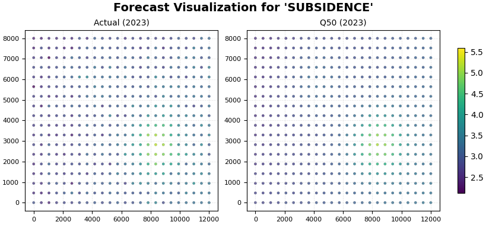
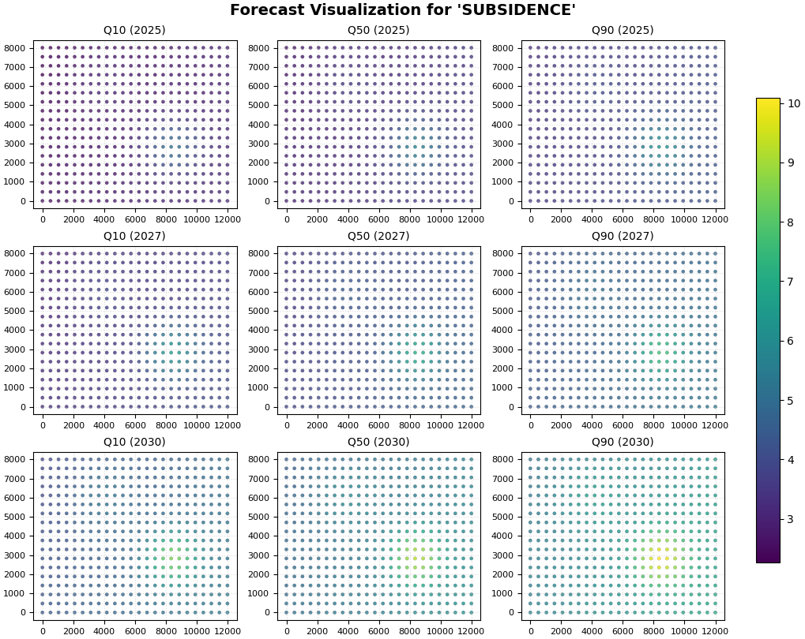

Note
Go to the end to download the full example code.
Holdout versus future forecast with plot_eval_future#
This lesson teaches how to compare:
a holdout / evaluation split, where true values exist, and
a future forecast split, where only predictions exist,
using geoprior.plot.plot_eval_future().
Why this figure matters#
Once a forecasting pipeline has produced outputs, users often need to answer two related but different questions:
How well does the model reproduce known-but-held-out values?
What does the model predict beyond the observed period?
These two questions should not be mixed.
The evaluation split is where we assess whether the model’s spatial pattern and central forecasts agree with observed values. The future split is where we inspect the forecasted scenarios beyond the known data window.
That is exactly why plot_eval_future exists.
The function is a convenience wrapper around forecast_view().
It visualizes:
an evaluation split with actual and predicted values shown side-by-side, and
a future split with prediction quantiles only.
What the function expects#
The plotting backend is designed to work with evaluation and future forecast tables that include columns such as:
sample_idxforecast_stepcoord_tfor timecoord_xandcoord_yfor space<target_name>_actualfor the evaluation split<target_name>_qXXor<target_name>_predfor predictions.
In practical terms:
df_evalshould contain actual values and predictions,df_futureshould contain predictions only.
What this lesson teaches#
This page is organized to help the reader interpret the two panels correctly.
We will:
create a compact synthetic evaluation table,
create a compact synthetic future table,
render the real
plot_eval_futurefigure,explain how to read the evaluation panel,
explain how to read the future panel,
connect the visual story to a small numerical summary.
The example is synthetic so it remains fully executable during the documentation build.
Imports#
We use the real public plotting function.
from __future__ import annotations
import numpy as np
import pandas as pd
from geoprior.plot import plot_eval_future
Step 1 - Build a compact synthetic evaluation split#
The evaluation split represents years for which we still have observed values. The table therefore includes:
spatial coordinates,
a time column,
actual values,
lower / median / upper predictive quantiles.
We construct one evaluation year (2023) so the panel is easy to read. The synthetic field has:
a coherent hotspot,
a moderate spatial gradient,
predicted quantiles that bracket the actual values with some error.
rng = np.random.default_rng(123)
nx = 24
ny = 18
eval_year = 2023
future_years = [2025, 2027, 2030]
xv = np.linspace(0.0, 12_000.0, nx)
yv = np.linspace(0.0, 8_000.0, ny)
X, Y = np.meshgrid(xv, yv)
x_flat = X.ravel()
y_flat = Y.ravel()
xn = (x_flat - x_flat.min()) / (x_flat.max() - x_flat.min())
yn = (y_flat - y_flat.min()) / (y_flat.max() - y_flat.min())
n_sites = x_flat.size
hotspot = np.exp(
-(
((xn - 0.70) ** 2) / 0.020
+ ((yn - 0.36) ** 2) / 0.030
)
)
ridge = 0.45 * np.exp(
-(
((xn - 0.32) ** 2) / 0.028
+ ((yn - 0.76) ** 2) / 0.050
)
)
gradient = 0.42 * xn + 0.18 * (1.0 - yn)
eval_q50 = 2.5 + 1.5 * gradient + 2.0 * hotspot + 1.0 * ridge
eval_width = 0.34 + 0.08 * xn + 0.06 * hotspot
eval_q10 = eval_q50 - eval_width + rng.normal(0.0, 0.02, size=n_sites)
eval_q50 = eval_q50 + rng.normal(0.0, 0.03, size=n_sites)
eval_q90 = eval_q50 + eval_width + rng.normal(0.0, 0.02, size=n_sites)
# Observed holdout values:
# close to q50, but not identical, with local mismatch
eval_actual = eval_q50 + rng.normal(0.0, 0.18, size=n_sites)
eval_rows: list[dict[str, float | int]] = []
for idx in range(n_sites):
eval_rows.append(
{
"sample_idx": idx,
"forecast_step": 1,
"coord_t": eval_year,
"coord_x": float(x_flat[idx]),
"coord_y": float(y_flat[idx]),
"subsidence_actual": float(eval_actual[idx]),
"subsidence_q10": float(eval_q10[idx]),
"subsidence_q50": float(eval_q50[idx]),
"subsidence_q90": float(eval_q90[idx]),
}
)
df_eval = pd.DataFrame(eval_rows)
print("Evaluation table shape:", df_eval.shape)
print("")
print(df_eval.head(8).to_string(index=False))
Evaluation table shape: (432, 9)
sample_idx forecast_step coord_t coord_x coord_y subsidence_actual subsidence_q10 subsidence_q50 subsidence_q90
0 1 2023 0.000000 0.0 2.947468 2.410218 2.795244 3.122935
1 1 2023 521.739130 0.0 2.602080 2.446558 2.788985 3.123332
2 1 2023 1043.478261 0.0 2.445551 2.503585 2.788642 3.159250
3 1 2023 1565.217391 0.0 2.733523 2.505620 2.827057 3.171975
4 1 2023 2086.956522 0.0 2.846524 2.544059 2.932493 3.265111
5 1 2023 2608.695652 0.0 2.796009 2.561110 2.878980 3.234758
6 1 2023 3130.434783 0.0 2.918577 2.560754 2.896439 3.290183
7 1 2023 3652.173913 0.0 2.938803 2.608245 2.953004 3.342534
Step 2 - Build a compact synthetic future split#
The future split keeps the same spatial grid but contains only predictions. There are no actual values because these years are beyond the observed period.
We create three years:
2025
2027
2030
The future field intensifies through time and the uncertainty also widens, which makes the page easy to interpret.
future_rows: list[dict[str, float | int]] = []
for year in future_years:
scale = {
2025: 1.10,
2027: 1.38,
2030: 1.82,
}[year]
width_add = {
2025: 0.10,
2027: 0.18,
2030: 0.30,
}[year]
fut_q50 = (
2.5 + 1.5 * gradient + 2.0 * hotspot + 1.0 * ridge
) * scale
fut_width = (
0.36
+ 0.08 * xn
+ 0.06 * hotspot
+ width_add
)
fut_q10 = fut_q50 - fut_width + rng.normal(0.0, 0.02, size=n_sites)
fut_q50 = fut_q50 + rng.normal(0.0, 0.03, size=n_sites)
fut_q90 = fut_q50 + fut_width + rng.normal(0.0, 0.02, size=n_sites)
for idx in range(n_sites):
future_rows.append(
{
"sample_idx": idx,
"forecast_step": year - eval_year,
"coord_t": year,
"coord_x": float(x_flat[idx]),
"coord_y": float(y_flat[idx]),
"subsidence_q10": float(fut_q10[idx]),
"subsidence_q50": float(fut_q50[idx]),
"subsidence_q90": float(fut_q90[idx]),
}
)
df_future = pd.DataFrame(future_rows)
print("")
print("Future table shape:", df_future.shape)
print("")
print(df_future.head(8).to_string(index=False))
Future table shape: (1296, 8)
sample_idx forecast_step coord_t coord_x coord_y subsidence_q10 subsidence_q50 subsidence_q90
0 2 2025 0.000000 0.0 2.583749 3.055927 3.512535
1 2 2025 521.739130 0.0 2.586976 3.063189 3.501520
2 2 2025 1043.478261 0.0 2.662520 3.058766 3.531569
3 2 2025 1565.217391 0.0 2.665328 3.079974 3.560611
4 2 2025 2086.956522 0.0 2.721458 3.179060 3.674892
5 2 2025 2608.695652 0.0 2.717549 3.172736 3.675513
6 2 2025 3130.434783 0.0 2.765008 3.224514 3.711910
7 2 2025 3652.173913 0.0 2.739836 3.255852 3.727106
Step 3 - Inspect the two tables numerically#
Before plotting, it is helpful to confirm:
evaluation has actuals,
future has no actuals,
future median forecasts rise with year,
interval width also grows with year.
df_eval["interval_width"] = (
df_eval["subsidence_q90"] - df_eval["subsidence_q10"]
)
df_future["interval_width"] = (
df_future["subsidence_q90"] - df_future["subsidence_q10"]
)
eval_summary = pd.DataFrame(
[
{
"year": eval_year,
"mean_actual": df_eval["subsidence_actual"].mean(),
"mean_q50": df_eval["subsidence_q50"].mean(),
"mean_width": df_eval["interval_width"].mean(),
"mae_q50_vs_actual": (
df_eval["subsidence_q50"] - df_eval["subsidence_actual"]
).abs().mean(),
}
]
)
future_summary = (
df_future.groupby("coord_t")
.agg(
mean_q50=("subsidence_q50", "mean"),
mean_width=("interval_width", "mean"),
q50_max=("subsidence_q50", "max"),
)
.reset_index()
.rename(columns={"coord_t": "year"})
)
print("")
print("Evaluation summary")
print(eval_summary.to_string(index=False))
print("")
print("Future summary")
print(future_summary.to_string(index=False))
Evaluation summary
year mean_actual mean_q50 mean_width mae_q50_vs_actual
2023 3.135323 3.135085 0.769062 0.149465
Future summary
year mean_q50 mean_width q50_max
2025 3.445877 1.006186 5.626477
2027 4.326765 1.170046 7.019677
2030 5.704994 1.408505 9.282699
Step 4 - Render the real holdout-versus-future figure#
We now call plot_eval_future.
Key settings:
df_eval=df_evalanddf_future=df_future: provide the two distinct splits;target_name="subsidence": tells the wrapper which prediction prefix to search for;quantiles=[0.1, 0.5, 0.9]: identifies the lower / median / upper forecast columns;eval_years=[2023]: show the evaluation year;future_years=[2025, 2027, 2030]: show the future years;eval_view_quantiles=[0.5]: keep the evaluation panel compact by comparing actual against the median forecast only;future_view_quantiles=[0.1, 0.5, 0.9]: show the full scenario range in the future panel.
Internally, the function forwards the evaluation split to
forecast_view with kind="dual" and the future split with
kind="pred_only".
plot_eval_future(
df_eval=df_eval,
df_future=df_future,
target_name="subsidence",
quantiles=[0.1, 0.5, 0.9],
spatial_cols=("coord_x", "coord_y"),
time_col="coord_t",
eval_years=[eval_year],
future_years=future_years,
eval_view_quantiles=[0.5],
future_view_quantiles=[0.1, 0.5, 0.9],
cmap="viridis",
cbar="uniform",
axis_off=False,
show_grid=True,
grid_props={"linestyle": ":", "alpha": 0.45},
figsize_eval=(8.2, 3.8),
figsize_future=(10.2, 8.1),
spatial_mode="hexbin",
hexbin_gridsize=38,
show=True,
verbose=0,
)


Step 5 - Learn how to read the evaluation panel#
The evaluation side should be read first.
Why?
Because this is the only place where we still know the truth.
The core question is:
does the model place the spatial signal in the right locations?
In the evaluation panel, the most useful comparison is between:
the actual map, and
the median forecast map.
What to look for#
A good evaluation panel should show:
similar hotspot placement,
broadly similar gradients,
similar relative ranking of low and high regions.
A perfect pixel-by-pixel match is not required for a useful model. What matters more is whether the model captures the main structure.
Warning signs include:
a hotspot in the wrong place,
a missing high-response zone,
strong over-smoothing that erases important features,
spatial patterns in the forecast that have no counterpart in the actual data.
Step 6 - Learn how to read the future panel#
After the evaluation panel, move to the future panel.
The future panel answers a different question:
given the model behavior that looked reasonable on holdout data, what does it project for the next years?
Here we no longer compare against actual values. Instead, we compare quantiles and years.
First read down the years#
Moving from 2025 to 2030 should tell you how the forecasted field evolves through time.
Ask:
does the response intensify?
does the footprint expand?
do the highest-risk areas remain stable in location?
Then read across the quantiles#
Within one year:
q10 gives a lower scenario,
q50 gives the central scenario,
q90 gives the upper scenario.
Ask:
is the hotspot already present in q10?
how much stronger does it become in q90?
are high-response zones also high-uncertainty zones?
Step 7 - Connect the visual story to a small accuracy summary#
A lesson becomes more useful when the holdout comparison is paired with a simple metric.
Here we compute:
MAE of q50 against actual on the evaluation split,
empirical coverage of the [q10, q90] interval on the evaluation split.
coverage_10_90 = np.mean(
(
df_eval["subsidence_actual"] >= df_eval["subsidence_q10"]
)
& (
df_eval["subsidence_actual"] <= df_eval["subsidence_q90"]
)
)
mae_q50 = np.mean(
np.abs(
df_eval["subsidence_q50"] - df_eval["subsidence_actual"]
)
)
metric_table = pd.DataFrame(
[
{
"metric": "MAE(q50 vs actual)",
"value": float(mae_q50),
},
{
"metric": "Coverage[q10, q90]",
"value": float(coverage_10_90),
},
]
)
print("")
print("Evaluation metrics")
print(metric_table.to_string(index=False))
Evaluation metrics
metric value
MAE(q50 vs actual) 0.149465
Coverage[q10, q90] 0.937500
How to interpret these numbers#
These numbers are not a substitute for a full evaluation section, but they do help anchor the figure.
A lower MAE suggests the median forecast is closer to the observed holdout field.
A reasonable interval coverage suggests the uncertainty band is not systematically too narrow.
Together with the map, these numbers answer:
is the median useful?
are the intervals plausible?
is the future panel worth trusting as a scenario view?
Step 8 - Practical reading guide for real workflows#
In a real GeoPrior forecasting workflow, this page is one of the most important transition figures because it connects:
known performance on holdout data,
to unknown projection in future years.
A robust reading sequence is:
Start with the evaluation actual-vs-median comparison.
Confirm the main spatial signal is captured.
Check a compact metric such as MAE or interval coverage.
Then move to future q10 / q50 / q90 maps.
Interpret future hotspots only in the context of the evaluation credibility you established first.
That sequence helps prevent a common mistake: over-interpreting attractive future maps before checking whether the model reproduced known structure at all.
Step 9 - Why this page comes after the first two forecasting lessons#
The forecasting gallery now forms a clear progression:
plot_forecasts: quick-look trajectories and step-wise views;forecast_view: future forecast maps by year and quantile;plot_eval_future: the bridge between holdout validation and future scenarios.
This third page is therefore not just another plotting lesson. It teaches the reader the correct scientific habit:
validate first, then interpret the future.
Total running time of the script: (0 minutes 2.423 seconds)